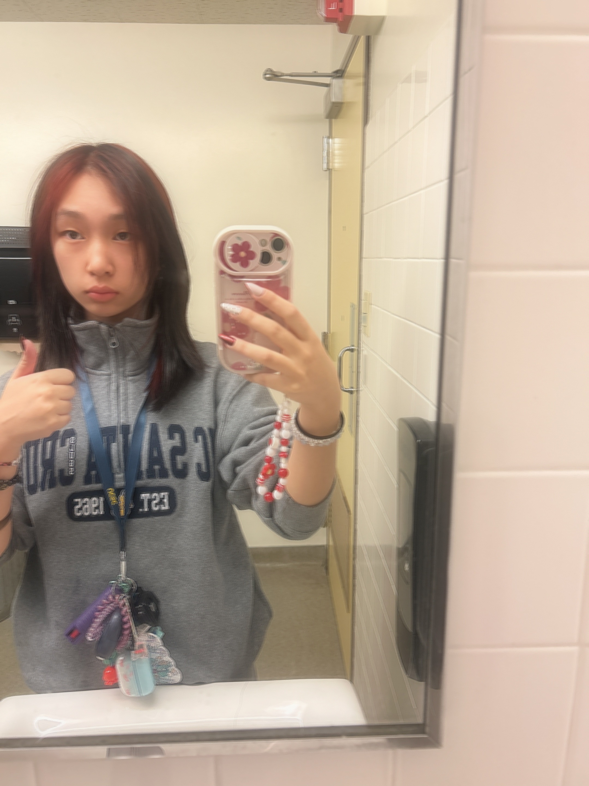

Hello World!
My partner Jacky is super cool and chill
Lab 2: CSS and HTML Starter
About Me
My name is Alyssa, I'm hoping to become a major in Art and Design: Games and Playable Media. I love art and character design and am a big fan of video games. I emjoy casual cosplay as well as jewelry making, and have a cat named Chloe.

Alyssa Yuen
Hello, I'm Alyssa Yuen, a first year in AGPM
Reflection
Put your reflections about this assignment here. How did it go? What kind of energy did you put into the assignment?
Results
Lab 3 File Structures
the subject of this lab was to create a local file structure onto my computer and insert index.httml files
Challenges
My biggest struggle during this lab was trying to figure out why my image wouldn,t upload properly. This task took me around 2 hours to figure out before I finally got it right.
Results
My results are basically what you see in this screenshot.